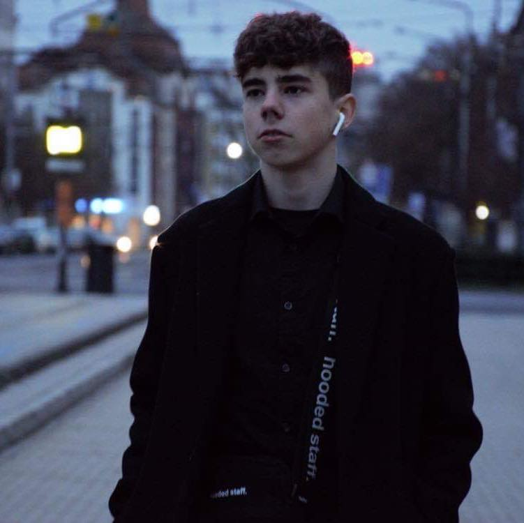

Takács Balázs
Elérhetőségek:
Facebook
Instagram

Tanulmányaim:
Bólyai János ált. iskolában végeztem emelt szintű angol évfolyamban!
Elkezdtem a középiskolai tanulmányaimat: Mechwart András Tachnikum
Céljaim:
Külföldön szeretnék vállalkozásba fogni az ismerőseim álltal!
Hobbiaim:
Online marketing
Balogh Photo